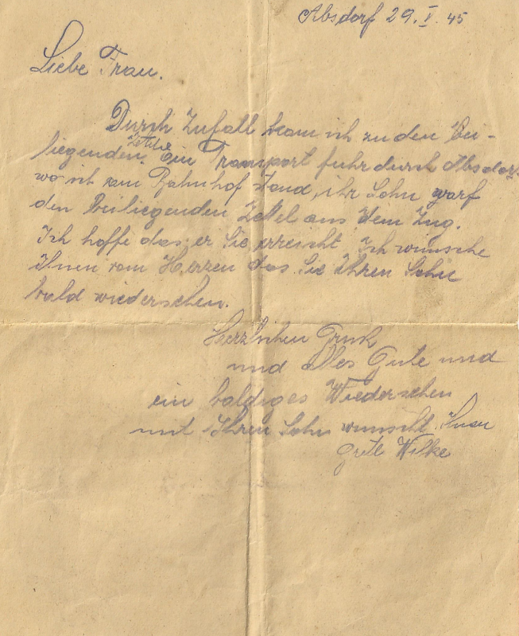

Deutschland und Österreich-Ungarn
Thematik:
- Tapferkeit der eigenen Soldaten
- Durchhaltevermögen
Propaganda anhand einiger konkreter Beispiele

In Briefen deutscher Kriegsgefangenen im März 1917 behauptet einer, er habe fürchterlich zugenommen, da er täglich zweimal Fleisch, ein Liter Milch und vieles mehr bekomme.
Ein weiterer schreibt, er bekomme viel Fleisch und Gemüse, Obst und Käse, Apfelwein soviel man will und manchmal sogar ein Glas Rotwein.